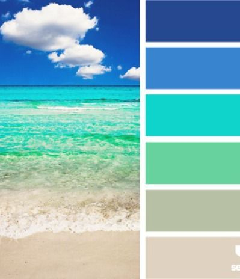
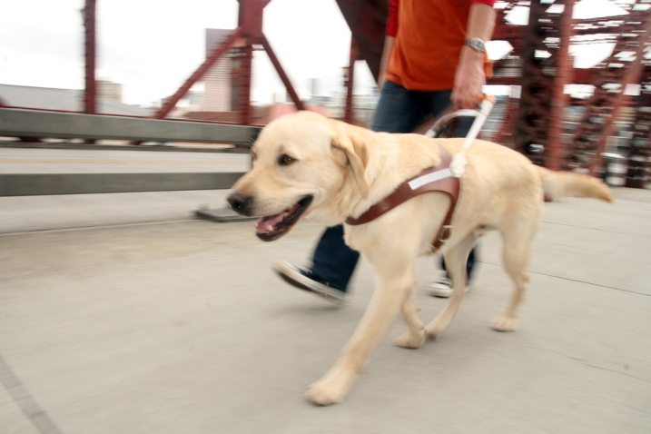
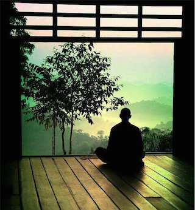
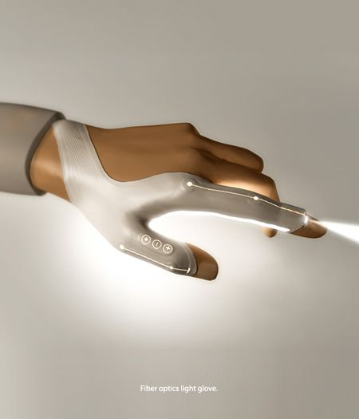
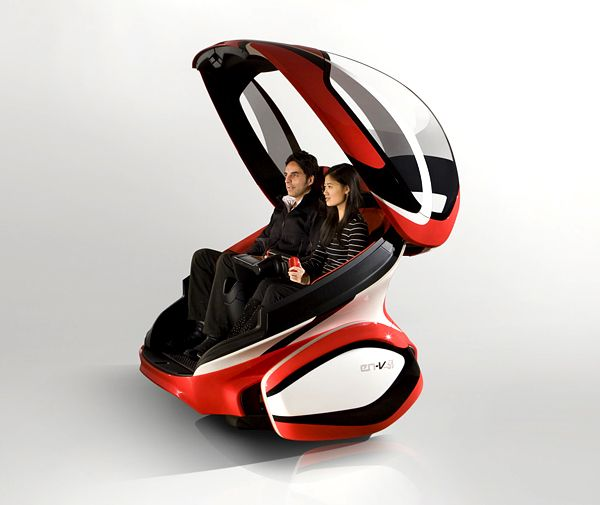
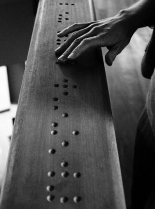
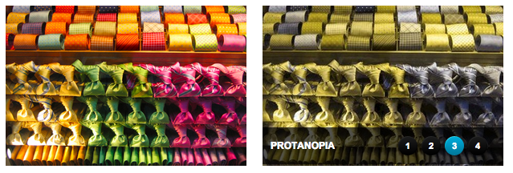
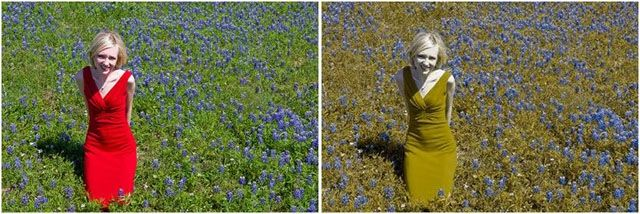

Katherine Zhu
Positive Mind and Strong in Action
Design Decisions
PROCESS BOOK 5
For this entry, highlight 3-5 design decisions that your team has made up until this point. For each, summarize the choice, explain how you arrived at a decision, and describe the final outcome. In addition to the verbal explanation, provide a photo or drawing that represents the problem, a photo or drawing that represents the choice to be made, and a photo or drawing that represents the final decision your team made.
- An app to indentify colors for people who are colorblind, at the same time coordinate colors for people who are colorblind based on their preference and the clothes they have.
- Traffic light detector for people who are colorblind.
- A app to tell the meat is cooked or not based on the color of the meat.
Color Identifier App
We come up with the app to help people who are colorblind to identify the color to correct their difference in color perception. At the same time, it will help them to find the matched color pairs their outfit. I noticed that my boyfriend usually ask me which tie matches the shirt he picked. He is very minor colorblind, and it is still a hard task for him every morning. Therefore we want to not only identify the color but also providing a matched color/matched colors for them to pick their outfit.
Traffic Light Detector
Depends on the type of colorblindnesses, people who have different color perception than normal vision has will hard time to tell the difference in traffic light. Even though they can see the position of the light that is on to tell which color it is (Red, Yellow, Green), it is very hard to do so at night with low light. Therefore we came up with the idea in developing an app to detect the traffic light color when they drive.
Food cooked or not
In the colorblindness problem space, people who are colorblind can't see the slight difference between colorsm fr example the light pink and white. It gives them a hard time to tell whether the meat is cooked or not. Expanding from the the color identifier app, we came up with the idea to check the color difference between the color in the middle of the meat and the color on the outside to tell whether food is cooked or not.
Mash Up
PROCESS BOOK 4
Make an entry in your process book using the technique of collage (digital or analog).
This collage represents the way I want to live my life.
Design Constrain
PROCESS BOOK 3 - Seeing differently
Go back to the 5+ images you selected for the firstProcess Book entry. Describe how you would translate your experience of each of those images to someone with a visual impairment.
-
Ocean: it is a place for people to relax and enjoy the water and sunshine. You can listen to the wind, play in the sand, swim in the ocean, laying on the beach.
 -
Helper: it is a guide dog for blind people. It helps people who are blind to avoid obstacles, and guide them to cross the street. It is also a great friend to its owner.
 -
Romantic: This image is a sitting area on the balcony surrounded by red leaves. Red leaves represents romance.
-
Relax: It is a image of a man sitting next to a door which facing the mountain. He is meditating
 -
Future: In the picture it is a glove that covers your thumb, it is metal material and has a light comes out from the figure tips. It represents the future technology.
 -
Technology: This is a mini two seats transportation. It has two seats and no wheel, which indicates it is a self driving car.

1/18/2015
PROCESS BOOK 2 - Experience as a spectrum
Watch the two videos below. Reflect on the range of physical, emotional and social aspects of blindness you observe. Include at least 2 images and 3 paragraphs of text with your reflection.
There are three pictures come to my mind after I watch the video. I wasn't aware of the people who have vision impairment. Before I don't like the beeping sound of traffic light, but now I have realized how helpful and essential these sound will help people who have trouble to see the traffic light.
One thing is directly related to blind people:  I have seen a blind man read his email by touching these changing blind reader line by line. It was not the fixed ones but changing with the things he typed. It is also combined with the screen reader. He told me when he was typing an email, "I want to make sure I typed 'p'," while he was touching the reader. I thought it will be hard for people to "see" the spell of a word, if they are blind. He proved that I was wrong. It inspires me to think out of box in term of coming up with the design to help people with visual impairment.
  Another thing that comes to my mind is the world the color blind people see. To me, it is not a easy to pick the right color that I feel it represents me, either bright or light. However, how can people who can't see the color we see pick the color for their outfit. People might have different preference, but the rules of color are the same, either complementary color or similar color. If there is a way to help people identify color, it will help people having trouble with color to know what the colors they pick meant to people with normal vision.
1/11/2015
Images I want to look at
For class INFO 360 Design Thinking, I want to focus on the following pictures.
Ocean
Helper
Romantic
Relax
Future
Technology